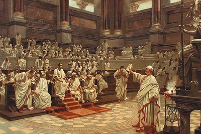

Who I Am and What I Do Part 2
Nakos the Latinist
Around the same time I started playing guitar, I discovered my other major passion: the Ancient World. More specifically, I doubled down on my existing interest in antiquity. Ever since I was a little kid, I had always been given lots of exposure to ancient history and mythology. Some of my fondest childhood memories consist of my dad and I watching movies like Gladiator, 300, and other "war movies," as well as lots of documentaries on ancient military history. The conquests of Alexander, the Punic Wars between Hannibal and the Romans, and the brave 300...all of it was (and always will be) so fascinating to me.
.jpg)
The interest that first blossomed in middle school, beginning a month or so before the first time I picked up a guitar was an interest in Ancient Rome, and the Latin language in particular. Something about the Latin language clicked for me almost instantly. My Latin education began by mastering the basic grammar concepts, and reading simplified versions of Greco-Roman myths (Fabulae Faciles).
Once I got to high school, I really began diving deeper into the world of Roman literature. Some of my favorite authors that I encountered were Petronius and his comedies, Cicero's speeches, and later on, the great Roman poets: Catullus, Ovid and Virgil.
The more Roman literature I read through school, the more interested I became in studying the Ancient World in college. Even before I got into UMass, I took a college level course - a 400-level class at Amherst College - which focused on more of the advanced writings of Cicero.
During my college career, I have continued my exploration of Roman literature, especially poetry and historical writings. One of my favorite authors that I discovered in college was the historian Tacitus. I spent the fall semesters of my Freshman and Sophomore years reading some of his more well-known biographical works, namely the Agricola, which tells the story of the acclaimed Roman general Gnaeus Julius Agricola (who was also Tacitus' father-in-law), as well as Book 48 of Tacitus' Annals which recounted the reign of Emperor Nero. Another highlight of my college Latin career was revisiting the poetry of Ovid as a Sophomore, where I read and analyzed his Metamorphoses. This is a compilation of epic poems which retell stories from Greco-Roman mythology. The Metamorphoses was a text that influenced me both in and outside of my studies. There is a reference to one of the myths contained in the greater work in the lyrics to my band's song Hunter-Master (signal hounds of 36 // to rip you apart like Actaeon)